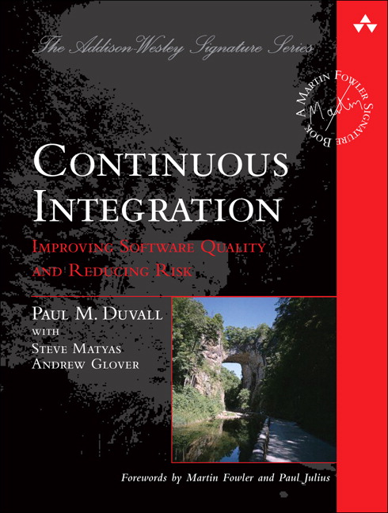

Automated Builds
Best Practices
The Plan
- Short Overview
- Local Build
- Database Versioning
- Artifacts
Sample Project
Platinum Reporting
- 1 Web Site
- 1 Console Application
- 2 Databases
- 3 Windows Services
- 1 Global Scape Job
Automated Builds
=
Continuous Integration
The Book
Continuous Integration?
Continuous Integration

Why do all this work?
- Reduce risks
- Reduce repetitive manual processes
- Generate deployable software at any time and at any place
- Enable better project visibility
- Establish greater confidence in the software product from the development team
(Duvall, 29)
Deployment Day

Becomes a Fixed Cost
Just not at first.
Accentuates Poor Architecture
Avoid These...
- Zero Automated Tests
- Large Swaths of SQL Code
- Over Use of SSIS, Biztalk, or WWF
- Dependencies on Ancient / Lost Libraries
- Large UC4 Jobs
The Local Build
* Best Practice
Have a Local Build
Run Before Every Checkin
* Best Practice
Run Local Build Before Every Checkin
Database Versioning
The Anti-Pattern
Centralized DB Development

* Best Practice
Developer Sandboxes

* Best Practice
Include Database with Code
Where appropriate.
But your database is too complicated
or too big

It CAN be done!
* Best Practice
Test Database Scripts with Build
The Build Server
Team City
* Best Practice
Everyone Should See Build the Status

Even Managers
Build should Fail when...
- Code does not Compile
- Any Test Fails
- Code Inspection Falls Outside of Parameters
* Best Practice
Build Should Run All Tests
But I don't got any tests :(
* Best Practice
Fix Broken Builds
Don't Let them Be Broken for too Long
* Best Practice
Build on Every Checkin
Trigger in Team City
* Best Practice
Keep Build Fast
Separate Slow Tests from Fast Tests
* Best Practice
Label Code on Successful Build
Artifacts
The stuff that gets deployed.
* Best Practice
Create Artifacts
* Best Practice
Automate Deployments
One to Zero Clicks
Deployments become...

No Big Deal
* Best Practice
Label Software Artifacts
Zip and DLLs
* Best Practice